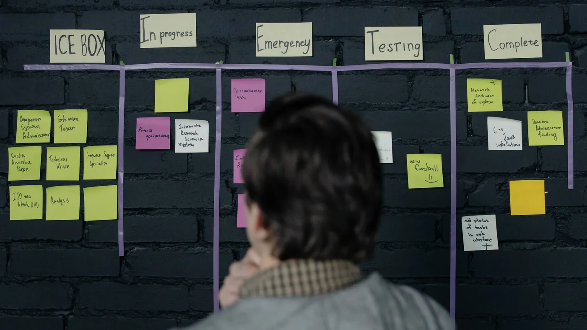

A lot of what a support supervisor does all day is routing and follow-up. That part is ready to hand to an agent. Deciding who gets the refund is not.
Towards Data Science ran an opinion piece titled "When the Code Becomes the CEO". Its argument is that much of middle management is a coordination layer: people who turn goals into tasks and chase the work between teams. The author thinks reasoning models and agents can now do that routing faster than people can, and that over the next decade companies will rebuild the layer as software.
Most of the piece is a forecast about the 2030s, with agents bidding against each other for budget, and you can take or leave that part. Two claims are worth keeping. Coordination is the part of management that software can now reach. And an agent that acts on its own needs rules enforced outside the model. The author puts it plainly: a prompt asking the agent to behave is a suggestion, and suggestions don't hold up when something goes wrong.
Ask a support team lead to log a week and the routing work shows up fast. Reassigning tickets that landed in the wrong queue. Pinging billing about an escalation that has sat for two days. Checking which cases are about to miss their response target. Writing the end-of-shift summary for the next lead. Very little of it needs judgment, and all of it has to happen, because when it slips a customer waits.
That is expensive time. Your most experienced people spend it moving information around instead of coaching agents, taking the hard cases, or fixing the process that keeps producing the same ticket. And the delays it causes are the ones customers notice: a case that sat in the wrong queue overnight, or an escalation nobody followed up.

Split the supervisor's day into two piles. The first is routing and follow-up: read the ticket, decide which team owns it, notice when it stalls, nudge the owner, report the state of the queue. The second is judgment: approve the goodwill credit, decide whether to bend policy for a long-standing customer, coach the agent who handled a call badly.
CX-Builder is built to automate the first pile. An agent reads incoming tickets, checks them against your routing rules and the customer's history, and assigns them. A scheduled flow sweeps the open queue, finds cases near their deadline or stuck waiting on another team, and posts a nudge to the owner in the tool they already use. At shift end it writes the handover summary from the ticket data instead of from someone's memory.
The second pile stays with people. Anything that spends money, grants an exception, or changes an account goes through a human-in-the-loop step, where the agent lays out the case and a supervisor approves or rejects it in one click. Limits on what the agent may do alone live in the flow itself, so a cleverly worded ticket can't talk the agent past them.
It is two or three flows, not one large agent. An intake agent with tools for your ticketing system and CRM handles assignment, with a document store holding the routing rules so they can be edited without rebuilding anything. A scheduled agentflow runs the sweep and the nudges, and writes a summary at shift change. Any action above a threshold you set routes to an approval node before it touches a customer record.
Start in shadow mode. Let the agent suggest assignments for two weeks while people keep doing the routing, and compare the two. Where it matches, let it act. Where it doesn't, you have found a rule nobody wrote down.
Have your team leads tag a week of their own time as either "routing and chasing" or "deciding". Automate the first column this quarter, starting with the stalled-ticket sweep, and put an approval step in front of everything in the second.